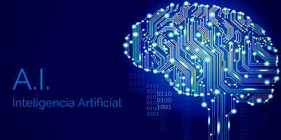
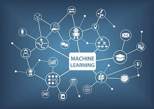
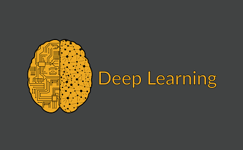
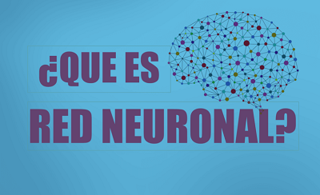
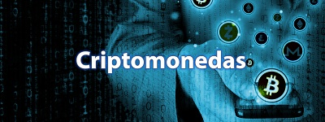
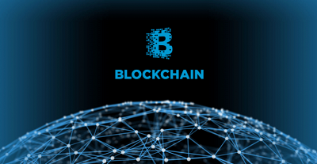
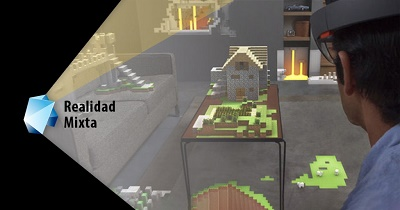
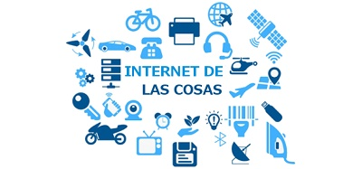

SEMINARIO DE TECNOLOGÍA
PRÁCTICA FINAL

HTML 5
HTML5: Es la quinta revisión (mayor) de este estandar. Las principales novedades que trae son nuevas etiquetas para conseguir la Web Semántica (que los elementos o etiquetas aporten significado y no sólo contenido) y nuevas APIs para permitir funcionalidades avanzadas de Javascript.
HTML:(HyperText Markup Language) Es un lenguaje de etiquetas que permite construir los documentos webs páginas web de forma que los navegadores puedan entender el contenido y mostrárselo al usuario. En internet es el estándar en el que la inmensa mayoría de páginas están realizadas.
Características técnicas de HTML5
-
HTML5 intenta sintetizar HTML4, XHTML 1 y DOM Level 2 HTML, permitiendo también ser escrito usando sintaxis HTML o XHTML.
-
Es importante destacar que HTML5 aún necesita fuertemente de CSS y JavaScript para darle estilo, animaciones e interacción a una página web.
-
En la actualidad los sitios web más interactivos utilizan HTML5, CSS3 y JavaScript o jQuery.
El desarrollo del HTML5 se inició en 2007 y comenzó a implementarse en 2010. Fue diseñado para reemplazar el HTML 4 y el XHTML, dándole a los diseñadores web un estándar más simple que incluya las nuevas características de la web moderna. Para diciembre de 2011 se estimaba que mil millones de teléfonos eran compatibles con HTML5. La versión final de este estándar de la W3C se lanzó el 28 de octubre de 2014.
-
¿Qué es y para que se utiliza HTML 5?
-
Curso Básico De HTML5 -
Imágenes - Curso HTML5 -
Estructura Básica de un Documento HTML5
Recomendaciones:
CSS 3
CCS 3: Permite presentar, de manera estructurada, un documento que fue escrito en un lenguaje de marcado. Se usa especialmente en el diseño visual de un sitio web cuando las páginas se hallan escritas en XML.
CCS: Se desarrolló en distintos niveles CCS 1 ya no se emplea, mientras que el CCS 2 funciona como recomendación. El CSS3, que se divide en varios módulos, es el lenguaje que se está tomando como estándar de forma que los navegadores puedan entender el contenido y mostrárselo al usuario. En internet es el estándar en el que la inmensa mayoría de páginas están realizadas.
¿Cómo funciona?
El lenguaje CSS se basa en una serie de reglas que rigen el estilo de los elementos en los documentos estructurados, y que forman la sintaxis de las hojas de estilo. Cada regla consiste en un selector y una declaración, esta última va entre corchetes y consiste en una propiedad o atributo, y un valor separados por dos puntos.
¿Para que sirve?
CSS: Es una especificación desarrollada por el W3C (World Wide Web Consortium) para permitir la separación de los contenidos de los documentos escritos en HTML, XML, XHTML, SVG, o XUL de la presentacin del documento con las hojas de estilo, incluyendo elementos tales como los colores, fondos, márgenes, bordes, tipos de letra..., modificando as la apariencia de una página web de una forma más sencilla, permitiendo a los desarrolladores controlar el estilo y formato de sus documentos.
-
¿Curso Básico de CSS
-
Aprendiendo CSS 3 -
¿Qué es CSS y para que sirve? -
Introducción de CSS 3
Recomendaciones:

JAVASCRIPT
Javascript: Es una especie de lenguaje de programación ligera, interpretado por la mayoría de los navegadores y que les proporciona a las páginas web, efectos y funciones complementarias a las consideradas como estándar HTML Este tipo de lenguaje de programación,lenguaje de programación, con frecuencia son empleados en los sitios web, para realizar acciones en el lado del cliente, estando centrado en el código fuente de la página web.
Javascript fue creado por la compañía de software Netscape Corporation para que fuese colocado en su navegador 2.0 y que gracias a su simplicidad, aún continúa siendo una de las herramientas de gran utilidad, para la creación de páginas web que posean algo más que texto de forma que los navegadores puedan entender el contenido y mostrárselo al usuario. En internet es el estándar en el que la inmensa mayoría de páginas están realizadas.
Es importante que quede claro, que Javascript no es del todo un lenguaje de programación, sino más bien un lenguaje de script (rutinas o guiones). Por lo tanto, es más parecido a los macros de los procesadores de hojas de cálculo o texto. Sería imposible ejecutar un programa completo con Javascript.
Los JavaScript ayudan a mejorar la gestión cliente/servidor; entre sus funciones básicas se encuentran: abrir y cerrar ventanas; cambios eficaces en una página (en lo que respecta a su contenido y aspecto; desarrollo de cadenas de texto; procedimientos aritméticos.
-
Curso Básico de JavaScript
-
¿Qué es JavaScript? -
Aplicación de Productos con Javascript -
El Futuro de JavaScript
Recomendaciones:
PROGRESSIVE WEB APPS
Progressive web apps: O por sus siglas en inglés PWA, son una nueva generación de aplicaciones web diseñadas para incrementar su funcionalidad , logrando que se carguen más rápido y tengan un rendimiento mayor; en función de la capacidad que disponga el dispositivo en que se instalen y ejecuten.
Las PWA se desarrollan utilizando estándares web muy actuales que permiten su instalación en ordenadores o en dispositivos móviles inteligentes, ofreciendo una experiencia mejorada de la aplicación, las aplicaciones web progresivas se comportan como aplicaciones web nativas, no obstante utilizan tecnologías web para lograr un mejor desempeño y funcionalidad.
La creciente influencia de los dispositivos móviles inteligentes en todos los aspectos de la vida cotidiana, incluyendo el mundo laboral, ha impulsado el desarrollo de las PWAs, que reúnen las mejores características de la web y de las apps nativas, lo que permite disminuir la brecha entre ambas tecnologías, ofreciendo a los usuarios una experiencia novedosa que les brinda grandes ventajas al utilizar dispositivos móviles.
Las Progressive Web Apps tienen por objeto llevar a las aplicaciones web a un nuevo nivel, acercándolas a las aplicaciones de escritorio y las apps nativas para dispositivos móviles, brindando la posibilidad de dar a una web las características de una aplicación, es decir dotándola de capacidad para tener funciones antes asociadas a aplicaciones y programas instalables en computadoras, portátiles o dispositivos móviles.
-
Las Aplicaciones PWA Son El Futuro
-
Introducción a las Aplicaciones PWA -
Aprende a crear Aplicaciones Web Progresivas -
Herramientas para desarrollo de PWA
Recomendaciones:

INTELIGENCIA ARTIFICIAL (A.I)
Inteligencia Artificial o por sus siglas en inglés (Artificial Intelligence, AI): Es la simulación de procesos de inteligencia humana por parte de máquinas, especialmente sistemas informáticos. Estos procesos incluyen el aprendizaje (la adquisición de información y reglas para el uso de la información), el razonamiento (usando las reglas para llegar a conclusiones aproximadas o definitivas) y la autocorrección.
El término AI fue acuñado por John McCarthy,un informático estadounidense, en 1956 durante la Conferencia de Dartmouth, donde nació la disciplina. Hoy en día, es un término general que abarca todo, desde la automatización de procesos robóticos hasta la robótica actual. Ha ganado prominencia recientemente debido, en parte, a los grandes volúmenes de datos, o al aumento de velocidad, tamaño y variedad de datos que las empresas están recopilando. AI puede realizar tareas tales como identificar patrones en los datos de manera más eficiente que los seres humanos, lo que permite a las empresas obtener más información sobre sus datos.
La AI fuerte, también conocida como inteligencia general artificial, es un sistema de AI con habilidades cognitivas humanas generalizadas, de modo que cuando se le presenta una tarea desconocida, tiene suficiente inteligencia para encontrar una solución. La prueba de Turing,desarrollada por el matemático Alan Turing en 1950, es un método utilizado para determinar si una computadora puede realmente pensar como un humano, aunque el método es polémico.
El segundo ejemplo es de Arend Hintze, profesor asistente de biología integradora e ingeniería y ciencias de computación en la Universidad Estatal de Michigan. Categoriza la AI en cuatro tipos, desde el tipo de sistemas de AI que existen hoy en día hasta los sistemas sensitivos, que aún no existen.
-
Avances En Inteligencia Artificial
-
¿Qué es la Inteligencia Artificial? -
Aplicaciones de la Inteligencia Artificial -
Inteligencia Artificial
Recomendaciones:
¬ Machine Learning

Machine Learning: Es una disciplina científica del ámbito de la Inteligencia Artificial: que crea sistemas que aprenden automáticamente; aprender en este contexto quiere decir, identificar tipos de patrones complejos en millones de datos de forma más concreta; Machine Learning se trata de crear programas capaces de generalizar comportamientos a partir de una información no estructurada suministrada en forma de ejemplos.
En realidad el nombre de la tecnología resulta bastante preciso. Aprender automáticamente es la característica principal que diferencia a estos sistemas de otros menos avanzados.
Machine learning (aprendizaje automático): se refiere a la capacidad de una máquina equipada con inteligencia artificial de administrar, pero, sobre todo, de aprender por sí misma. A través de procesos sistemáticos y algoritmos, el machine learning puede conceptualizar, desarrollar e integrar diferentes tipos de tareas.
-
¿Qué es Machine Learning?
-
Todos Podemos Aprender Machine Learning
Recomendaciones:
¬ Deep Learning

Deep Learning: El aprendizaje profundo, también conocido como redes neuronales profundas, es un aspecto de la inteligencia artificial (AI) que se ocupa de emular el enfoque de aprendizaje que los seres humanos utilizan para obtener ciertos tipos de conocimiento. En su forma más simple, el aprendizaje profundo puede considerarse como una forma de automatizar el análisis predictivo.
Los programas informáticos que utilizan el aprendizaje profundo pasan por el mismo proceso. Cada algoritmo en la jerarquía aplica una transformación no lineal en su entrada y utiliza lo que aprende para crear un modelo estadístico como salida. Las iteraciones continúan hasta que la salida ha alcanzado un nivel de precisión aceptable. El número de capas de procesamiento a través de las cuales los datos deben pasar es lo que inspiró la etiqueta de profundidad ("deep").
-
Introducción al Deep Learning
-
Deep Learning
Recomendaciones:
¬ Red Neuronal

Red Neuronal: Son un campo muy importante dentro de la Inteligencia Artificial. Inspirándose en el comportamiento conocido del cerebro humano (principalmente el referido a las neuronas y sus conexiones), trata de crear modelos artificiales que solucionen problemas difíciles de resolver mediante técnicas algorítmicas convencionales.
Desde la década de los 40, en la que nació y comenzó a desarrollarse la informática, el modelo neuronal la ha acompañado. De hecho, la aparición de los computadores digitales y el desarrollo de las teorías modernas acerca del aprendizaje y del procesamiento neuronal se produjeron aproximadamente al mismo tiempo, a finales de los años cuarenta. Desde entonces hasta nuestros días, la investigación neurofisiológica y el estudio de sistemas neuronales artificiales (ANS, Artificial Neural Systems) han ido de la mano. Sin embargo, los modelos de ANS no se centran en la investigación neurológica, si no que toma conceptos e ideas del campo de las ciencias naturales para aplicarlos a la resolución de problemas pertenecientes a otras ramas de las ciencias y la ingeniería.
-
¿Qué es una red neuronal?
-
Redes Neuronales
Recomendaciones:

CRIPTOMONEDAS
Las Criptomonedas: Son monedas virtuales. Pueden ser intercambiadas y operadas como cualquier otra divisa tradicional, pero están fuera del control de los gobiernos e instituciones financieras.
Existe un gran número de criptodivisas disponibles, todas con sus propias características y aplicaciones. Las que tienen mayor capitalización de mercado son -al menos por ahora- una minoría, que incluye bitcoin, bitcoin cash, ether, litecoin, ripple y dash.
Las criptomonedas pueden ser consideradas como una alternativa a las divisas tradicionales, pero en realidad fueron concebidas como una solución de pago completamente convencional. En estos momentos, bastantes tiendas aceptan criptomoneda como forma de pago.
¿Qué es minar criptomonedas?
Minar Criptomonedas es el proceso a través del cual las transacciones de criptomoneda se verifican y se ofrecen nuevas unidades.
-
¿Qué es Bitcoin y cómo funciona?
-
¿Qué son las Criptomonedas? -
¿Cómo funciona el bitcoin? -
Historia de las Criptomonedas
Recomendaciones:

BLOCKCHAIN
La Blockchain o cadena de bloques: Es una base de datos pública y distribuida en la cual se registran todas las transacciones. Es una contabilidad pública que funciona a través de una red distribuida de ordenadores, es decir, no requiere ninguna autoridad central ni terceras partes que actúen como intermediarias. Funciona igual que un libro mayor de contabilidad pero en este caso los apuntes son públicos y descentralizados. Blockchain está formado por una cadena de bloques diseñada exclusivamente para evitar su alteración una vez que los datos han sido publicados.
El concepto y la tecnología de Cadena de Bloques fue creado en el año 2009 con la aparición de la moneda virtual Bitcoin. Su autor, Satoshi Nakamoto, de identidad desconocida, publicó un artículo en la red que describía un sistema Peer-to-Peer y un protocolo de dinero digital. A su vez, lanzó el Software Bitcoin, creando una red con el mismo nombre y las primeras unidades de moneda virtual, moneda virtual, Bitcoins.
Actualmente, existen numerosas clases de moneda virtual. Algunas lograrán sobrevivir, otras no. Sin embargo, el verdadero potencial es la tecnología que subyace detrás de Bitcoin, la tecnología BlockChain.
¿Y cómo funciona Blockchain?
Todo el mundo habla de ello, pero poca gente es capaz de explicar realmente cómo funciona Blockchain. Hasta ahora siempre habíamos necesitado de un tercero en el que las dos partes confiaran para garantizar la autenticidad de las transacciones ya sea un banco, un auditor, un notario o Paypal, por ejemplo, que tuviese un registro o sello de veracidad. La Blockchain soluciona este problema de doble gasto al combinar la tecnología P2P de intercambio entre pares con la criptografía y así crear una nueva forma de comunicación e intercambio digital.
-
Blockchain ¿Cómo usar el monedero Bitcoin?
-
¿Cómo utilizar Blockchain? -
¿Qué es "Blockchain? -
¿Cómo funciona Blockchain?
Recomendaciones:
CYBERSEGURIDAD
La Cyberseguridad: Es el conjunto de herramientas, políticas, conceptos de seguridad, salvaguardas de seguridad, directrices, métodos de gestión de riesgos, acciones, formación, prácticas idóneas, seguros y tecnologías que pueden utilizarse para proteger los activos de la organización y los usuarios en el ciberentorno.“Protección de activos de información, a través del tratamiento de amenazas que ponen en riesgo la información que es procesada, almacenada y transportada por los sistemas de información que se encuentran interconectados”.
Características de Cyberseguridad
La ciberseguridad es la Seguridad de la Información como la protección de la confidencialidad, integridad y la disponibilidad de la información:
-
La integridad puede ser definida la propiedad de conservar la exactitud y la complejidad de los activos de información.
-
Capacidad de prevención.
-
Seguridad de los Sistemas.
Ventajas de Cybersegurida
-
La seguridad informática se encarga de asegurar la integridad y privacidad de la información de un sistema informático y sus usuarios.
-
Crea buenas medidas de seguridad que evitan daños y problemas que pueden ocasionar intrusos.
-
Sistema de Gestion de riesgo, dispuesto a protejer nuestros equipos.
Desventajas de Cybersegurida
-
La seguridad absoluta no es posible.
-
En los equipos más desactualizados un antivirus realmente efectivo puede ser muy pesado, puede hacerlos más lentos, y ocupar mucho espacio en memoria.
-
Con el avance de la tecnología, es mas facil robar información y por eso es necesario contratar servicios de Ciberseguridad, muchos de estos servicios tienen costos elevados.
-
Introducción Al Hacking y Cyberseguridad
-
Cyberseguridad -
Cyberseguridad para la empresa -
¿Cómo funciona la Cyberseguridad?
Recomendaciones:
REALIDAD VIRTUAL (RV)
La Realidad Virtual (VR por virtual reality): Es un sistema informático que genera en tiempo real representaciones de la realidad, que de hecho no son más que ilusiones ya que se trata de una realidad perceptiva sin ningún soporte físico y que únicamente se da en el interior de los ordenadores.
La simulación: que hace la realidad virtual se puede referir a escenas virtuales, creando un mundo virtual que sólo existe en el ordenador de lugares u objetos que existen en la realidad. También permite capturar la voluntad implícita del usuario en sus movimientos naturales proyectándolos en el mundo virtual que estamos generando, proyectando en el mundo virtual movimientos reales.
Las aplicaciones que en la actualidad encontramos de la realidad virtual a actividades de la vida cotidiana son muchas y diversas. Hay que destacar: la reconstrucción de la herencia cultural, la medicina, la simulación de multitudes y la sensación de presencia.
La realidad virtual en el área de la informática es usada comúnmente para la creación de videojuegos o para dispositivos en el área de la entretención. La tecnología usada para crear esta realidad paralela a través del mundo virtual es comúnmente desarrollada en cascos y lentes que integran un entorno por medio de la visión, la audición y algunos desarrollan también el tacto.
-
¿Qué es Realidad Virtual?
-
Usos De La Realidad Virtual -
Realidad Virtual -
RV
Recomendaciones:
REALIDAD AUMENTADA (RA)
La Realidad Aumentada, también conocida por sus siglas “RA”: Es un elemento de las nuevas tecnologías que permite disponer de una visión diferente de la realidad. Consiste en la combinación de elementos de un entorno real con otros elementos de un entorno virtual que han sido creados en tres dimensiones. Al mismo tiempo, estos dos elementos se combinan en tiempo real.
La característica principal de esta tecnología es la visualización de un entorno virtual (por ejemplo, unos animales pequeños de mayor tamaño) y su interacción con la realidad del entorno real.
En la década de 1950 el cineasta Morton Heilig ideó el sensorama para dar una nueva dimensión a los sentidos. Esta tecnología se aplicó inicialmente en el ámbito del teatro y posteriormente se adaptó al cine. Inicialmente, el sensorama o cine 4DX jugaba con distintos sentidos y de esta forma el espectador percibía imágenes con un ángulo mayor y al mismo tiempo con un sonido estéreo y con la intervención de aromas. Todo ello lograba un efecto multiplicador, es decir, una realidad aumentada. De esta manera se conseguía que el espectador tuviera una experiencia más intensa.
El futuro
Esta tecnología presenta unas posibilidades enormes y puede cambiar el futuro en muchos aspectos de nuestras vidas. En la actualidad hay proyectos muy avanzados relacionados con nuevas formas de ver la televisión, con la decoración, la ingeniería o la medicina. De hecho, ya existen modelos de gafas de realidad aumentada y su campo de actuación puede llegar a cambiar nuestra manera de relacionarnos y de comprender la realidad.
-
Curso de Realidad Aumentada
-
Realidad Aumentada -
¿Qué es la Realidad Virtual y Realidad Aumentada? -
RA
Recomendaciones:

REALIDAD MIXTA (RM)
La Realidad Mixta (RM), también llamada realidad híbrida: Es la fusión de mundos reales y virtuales para producir nuevos entornos y visualizaciones donde los objetos físicos y digitales coexisten e interactúan en tiempo real. La Realidad Mixta se produce no sólo en el mundo físico o en el mundo virtual, sino que es una mezcla de realidad y realidad virtual, que abarca tanto la Realidad Aumentada (AR) como la Virtualidad Aumentada (AV).
En 1994, Paul Milgram y Fumio Kishino definieron una realidad mixta como ‘… entre los extremos del continuum de la virtualidad’ (VC), donde el continuum de la virtualidad se extiende desde el entorno completamente real hasta el completamente virtual con Realidad Aumentada y entre Virtualidad Aumentada.
Este continuo es uno de los dos ejes en el concepto de En 1994, Steve Mann de la realidad mediada, implementada por varios cascos de soldadura y computadoras portátiles y sistemas fotográficos portátiles que creó en los años 70 y principios de los 80, siendo el segundo eje el continuo medial, que incluye, por ejemplo, Realidad Disminuida (implementada en un casco de soldadura o gafas que pueden bloquear la publicidad o reemplazar los anuncios del mundo real con información útil).
La Realidad Mixta o Realidad Híbrida es la fusión de los mundos real y virtual para producir nuevos entornos y visualizaciones donde los objetos físicos y digitales coexisten e interactúan en tiempo real. Podríamos decir que la Realidad Mixta abarca lo mejor de los mundos de la Realidad Virtual y la Aumentada.
-
¿Qué es Realidad Mixta?
-
Realidad Mixta -
RM -
Usos De La Realidad Mixta
Recomendaciones:

INTERNET DE LAS COSAS (IOT)
Internet de las Cosas, o Internet of Things (IOT) en inglés: Es un sistema de dispositivos de computación interrelacionados, máquinas mecánicas y digitales, objetos, animales o personas que tienen identificadores únicos y la capacidad de transferir datos a través de una red, sin requerir de interacciones humano a humano o humano a computadora.
Una cosa, en la internet de las cosas, puede ser una persona con un implante de monitor de corazón, un animal de granja con un transpondedor de biochip, un automóvil que tiene sensores incorporados para alertar al conductor cuando la presión de los neumáticos es baja, o cualquier otro objeto natural o artificial al que se puede asignar una dirección IP y darle la capacidad de transferir datos a través de una red.
IOT ha evolucionado desde la convergencia de tecnologías inalámbricas, sistemas micro-electromecánicos (MEMS), microservicios e internet. La convergencia ha ayudado a derribar las paredes de silos entre la tecnología operativa (OT) y la tecnología de la información (TI), permitiendo que los datos no estructurados generados por máquinas sean analizados para obtener información que impulse mejoras.
Kevin Ashton, cofundador y director ejecutivo del Auto-ID Center de MIT, mencionó por primera vez la internet de las cosas en una presentación que hizo a Procter & Gamble en 1999.
-
El Internet De Las Cosas
-
IOT -
¿Qué es Internet de las cosas? -
El Internet de las cosas y ¿para qué sirve?
Recomendaciones:
MECATRÓNICA
La mecatrónica: Es un área multidisciplinar, ya que incorpora elementos de la electrónica, la mecánica, robótica, sistemas de computación y manufactura. El profesional de este sector ha estudiado la rama de ingeniería mecatrónica.
El término mecatrónica se empezó a utilizar en Japón a principios de 1980 y hoy en día se emplea en todo lo relacionado con el mejoramiento y la simplificación de la actividad industrial.
Sus campos de actuación son muy diversos y con un amplio abanico de posibilidades: diseño de productos con sistemas de control basados en procesos inteligentes o sistemas automatizados. La finalidad de todo ello es reducir el tiempo en los procesos de automatización de las diferentes máquinas en los distintos sectores industriales. Esta reducción en el tiempo permite la obtención de un mayor beneficio económico.
Se podría decir, que la mecatrónica es una combinación de ingenierías diferentes. Un sistema mecatrónico puede ser, por poner un simple ejemplo, un vehículo (que tiene su parte mecánica, electrónica y un software). Este ejemplo ilustra la necesidad de que un profesional combine áreas de la ingeniería en una disciplina más global e integradora, la ingeniería mecatrónica.
-
Ingeniería Mecatrónica
-
Introducción a la Mecatrónica -
Laboratorio de Mecatrónica -
Curso de Mecatrónica
Recomendaciones:

3D PRINTING
La impresión 3D, también conocida como manufactura por adición: Es un proceso por el cual se crean objetos físicos colocando un material por capas en base a un modelo digital. Todos los procesos de impresión 3D requieren que el software, el hardware y los materiales trabajen en conjunto.
La tecnología de impresión 3D puede utilizarse para crear todo tipo de cosas, desde prototipos y piezas simples hasta productos finales altamente técnicos, como piezas para aeronaves (Inglés), edificios ecológicos, implantes médicos que pueden salvar vidas e incluso órganos artificiales que se producen con capas de células humanas.
La tecnología de impresión 3D se vuelve rápidamente más confiable para la producción en masa de piezas, y los científicos e inventores están descubriendo nuevas formas de aplicar tecnología de impresión 3D en el día a día.
Presentamos Ember, la primera impresora 3D de código abierto apta para producción. Ember utiliza tecnología SLA de procesamiento de luz digital de alta resolución. Permite imprimir piezas digitales con una precisión de 25 micrones para obtener superficies con acabado suave. Como parte de una plataforma 3D abierta, Ember puede trabajar con distintas resinas.
-
¿Qué es una Impresora 3D y cómo funciona?
-
Impresora 3D -
Módelo para Impresión 3D -
3D
Recomendaciones:
TECNOLOGÍA G5
La Tecnología G5: Son las siglas utilizadas para referirse a la quinta generación de tecnologías de telefonía móvil. Es la sucesora de la tecnología 4G. Actualmente se encuentra sin estandarizar y las empresas de telecomunicación están desarrollando sus prototipos. Está previsto que su uso común sea en 2020.
Con gran impacto económico y productivo la tecnología de quinta generación, es la proxima manera de manejar la telefonía móvil.
La red inalámbrica de la próxima (5ta) generación abordará la evolución más allá del internet móvil, y alcanzará al Internet de las Cosas masivo hacia 2020. La evolución más notable en comparación con las redes 4G y 4.5G (LTE avanzado) actuales es que, aparte del aumento en la velocidad de los datos, los nuevos casos de uso del Internet de las Cosas y de la comunicación requerirán nuevos tipos de desempeño mejorado; como la “latencia baja”, que brinda una interacción en tiempo real a los servicios que utilizan la nube, lo que resulta clave, por ejemplo, para los vehículos autónomos.
A diferencia de los servicios actuales del Internet de las Cosas que sacrifican rendimiento para sacar el máximo provecho a las tecnologías inalámbricas existentes (3G, 4G, WiFi, Bluetooth, Zigbee, etc.), las redes 5G estarán diseñadas para alcanzar el nivel de rendimiento que necesita el Internet de las Cosas masivo. Esto hará posible que se perciba un mundo completamente conectado.
-
La Tecnología G5
-
¿Qué son las Tecnologías 5G? -
5G -
¿Cómo nos puede servir Tecnologia 5G?
Recomendaciones:
RESUMEN
HTML 5
HTML5: Es la quinta revisión (mayor) de este estandar. Las principales novedades que trae son nuevas etiquetas para conseguir la Web Semántica (que los elementos o etiquetas aporten significado y no sólo contenido) y nuevas APIs para permitir funcionalidades avanzadas de Javascript.
CSS3
CCS 3: Permite presentar, de manera estructurada, un documento que fue escrito en un lenguaje de marcado. Se usa especialmente en el diseño visual de un sitio web cuando las páginas se hallan escritas en XML. CCS: Se desarrolló en distintos niveles.CCS 1 ya no se emplea, mientras que el CCS 2 funciona como recomendación. El CSS3, que se divide en varios módulos, es el lenguaje que se está tomando como estándar de forma que los navegadores puedan entender el contenido y mostrárselo al usuario. En internet es el estándar en el que la inmensa mayoría de páginas están realizadas.
JAVASCRIPT
Javascript: Es una especie de lenguaje de programación ligera, interpretado por la mayoría de los navegadores y que les proporciona a las páginas web, efectos y funciones complementarias a las consideradas como estándar HTML Este tipo de lenguaje de programación,lenguaje de programación, con frecuencia son empleados en los sitios web, para realizar acciones en el lado del cliente, estando centrado en el código fuente de la página web. Javascript fue creado por la compañía de software Netscape Corporation para que fuese colocado en su navegador 2.0 y que gracias a su simplicidad, aún continúa siendo una de las herramientas de gran utilidad, para la creación de páginas web que posean algo más que texto de forma que los navegadores puedan entender el contenido y mostrárselo al usuario. En internet es el estándar en el que la inmensa mayoría de páginas están realizadas.
PROGRESSIVE WEB APPS
Progressive web apps: O por sus siglas en inglés PWA, son una nueva generación de aplicaciones web diseñadas para incrementar su funcionalidad , logrando que se carguen más rápido y tengan un rendimiento mayor; en función de la capacidad que disponga el dispositivo en que se instalen y ejecuten. Las PWA se desarrollan utilizando estándares web muy actuales que permiten su instalación en ordenadores o en dispositivos móviles inteligentes, ofreciendo una experiencia mejorada de la aplicación, las aplicaciones web progresivas se comportan como aplicaciones web nativas, no obstante utilizan tecnologías web para lograr un mejor desempeño y funcionalidad.
INTELIGENCIA ARTIFICIAL (IA)
Inteligencia Artificial o por sus siglas en inglés (Artificial Intelligence, AI): Es la simulación de procesos de inteligencia humana por parte de máquinas, especialmente sistemas informáticos. Estos procesos incluyen el aprendizaje (la adquisición de información y reglas para el uso de la información), el razonamiento (usando las reglas para llegar a conclusiones aproximadas o definitivas) y la autocorrección.
• Machine Learning
Machine Learning: Es una disciplina científica del ámbito de la Inteligencia Artificia: que crea sistemas que aprenden automáticamente; aprender en este contexto quiere decir, identificar tipos de patrones complejos en millones de datos de forma más concreta; Machine Learning se trata de crear programas capaces de generalizar comportamientos a partir de una información no estructurada suministrada en forma de ejemplos. En realidad el nombre de la tecnología resulta bastante preciso. Aprender automáticamente es la característica principal que diferencia a estos sistemas de otros menos avanzados.
• Deep learning
Deep Learning: El aprendizaje profundo, también conocido como redes neuronales profundas, es un aspecto de la inteligencia artificial (AI) que se ocupa de emular el enfoque de aprendizaje que los seres humanos utilizan para obtener ciertos tipos de conocimiento. En su forma más simple, el aprendizaje profundo puede considerarse como una forma de automatizar el análisis predictivo.
• Redes Neuronales
Red Neuronal: Son un campo muy importante dentro de la Inteligencia Artificial. Inspirándose en el comportamiento conocido del cerebro humano (principalmente el referido a las neuronas y sus conexiones), trata de crear modelos artificiales que solucionen problemas difíciles de resolver mediante técnicas algorítmicas convencionales.
CRIPTOMONEDA
Las Criptomonedas: Son monedas virtuales. Pueden ser intercambiadas y operadas como cualquier otra divisa tradicional, pero están fuera del control de los gobiernos e instituciones financieras. Existe un gran número de criptodivisas disponibles, todas con sus propias características y aplicaciones. Las que tienen mayor capitalización de mercado son -al menos por ahora- una minoría, que incluye bitcoin, bitcoin cash, ether, litecoin, ripple y dash.
BLOCKCHAIN
La Blockchain o cadena de bloques: Es una base de datos pública y distribuida en la cual se registran todas las transacciones. Es una contabilidad pública que funciona a través de una red distribuida de ordenadores, es decir, no requiere ninguna autoridad central ni terceras partes que actúen como intermediarias. Funciona igual que un libro mayor de contabilidad pero en este caso los apuntes son públicos y descentralizados. Blockchain está formado por una cadena de bloques diseñada exclusivamente para evitar su alteración una vez que los datos han sido publicados.
CYBERSEGURIDAD
La Cyberseguridad:Es el conjunto de herramientas, políticas, conceptos de seguridad, salvaguardas de seguridad, directrices, métodos de gestión de riesgos, acciones, formación, prácticas idóneas, seguros y tecnologías que pueden utilizarse para proteger los activos de la organización y los usuarios en el ciberentorno.
REALIDAD VIRTUAL
La Realidad Virtual (VR por virtual reality): Es un sistema informático que genera en tiempo real representaciones de la realidad, que de hecho no son más que ilusiones ya que se trata de una realidad perceptiva sin ningún soporte físico y que únicamente se da en el interior de los ordenadores.
REALIDAD AUMENTADA
La Realidad Aumentada, también conocida por sus siglas “RA”: Es un elemento de las nuevas tecnologías que permite disponer de una visión diferente de la realidad. Consiste en la combinación de elementos de un entorno real con otros elementos de un entorno virtual que han sido creados en tres dimensiones. Al mismo tiempo, estos dos elementos se combinan en tiempo real.
REALIDAD MIXTA
La Realidad Mixta (RM), también llamada realidad híbrida: Es la fusión de mundos reales y virtuales para producir nuevos entornos y visualizaciones donde los objetos físicos y digitales coexisten e interactúan en tiempo real. La Realidad Mixta se produce no sólo en el mundo físico o en el mundo virtual, sino que es una mezcla de realidad y realidad virtual, que abarca tanto la Realidad Aumentada (AR) como la Virtualidad Aumentada (AV).
INTERNET DE LAS COSAS
Internet de las Cosas, o Internet of Things (IOT) en inglés: Es un sistema de dispositivos de computación interrelacionados, máquinas mecánicas y digitales, objetos, animales o personas que tienen identificadores únicos y la capacidad de transferir datos a través de una red, sin requerir de interacciones humano a humano o humano a computadora.
MECATRÓNICA
La mecatrónica: Es un área multidisciplinar, ya que incorpora elementos de la electrónica, la mecánica, robótica, sistemas de computación y manufactura. El profesional de este sector ha estudiado la rama de ingeniería mecatrónica. El término mecatrónica se empezó a utilizar en Japón a principios de 1980 y hoy en día se emplea en todo lo relacionado con el mejoramiento y la simplificación de la actividad industrial.
3D PRINTING
La impresión 3D, también conocida como manufactura por adición: Es un proceso por el cual se crean objetos físicos colocando un material por capas en base a un modelo digital. Todos los procesos de impresión 3D requieren que el software, el hardware y los materiales trabajen en conjunto.
TECNOLOGÍA G5
La Tecnología G5: Son las siglas utilizadas para referirse a la quinta generación de tecnologías de telefonía móvil. Es la sucesora de la tecnología 4G. Actualmente se encuentra sin estandarizar y las empresas de telecomunicación están desarrollando sus prototipos. Está previsto que su uso común sea en 2020.